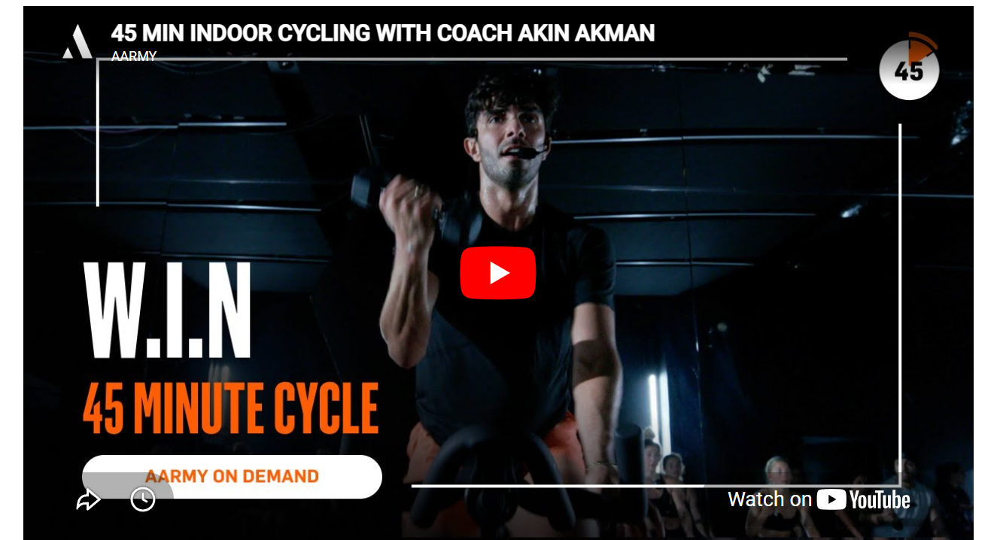
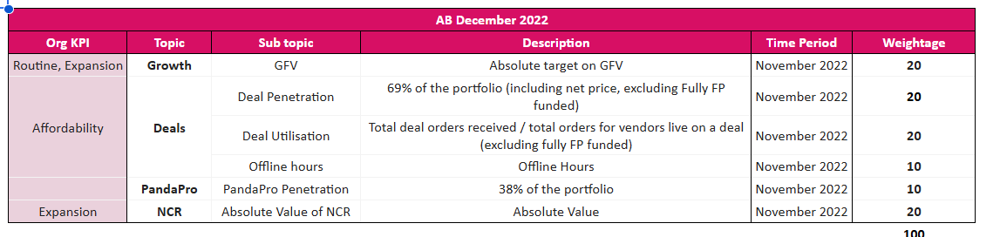
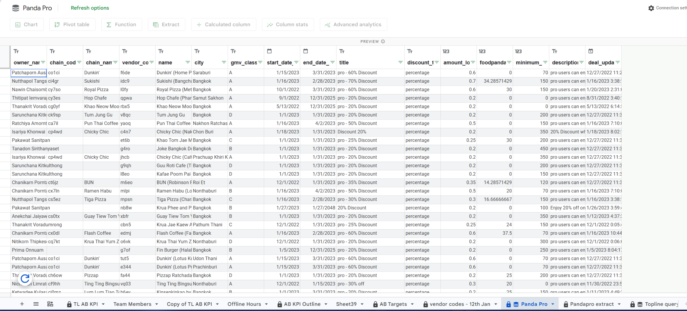
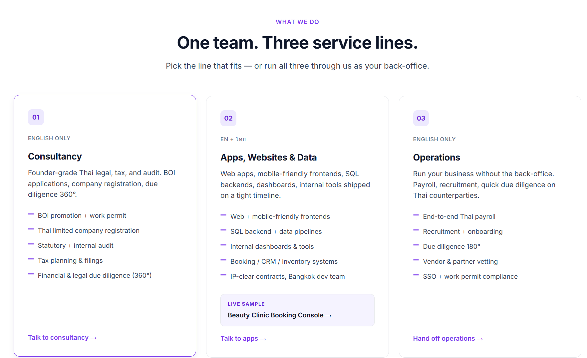

As a Head Position I dislike document formatting so I’m going to send you two files. One AI does way better.
Pachara Don Stewart — before I answer you 8 questions, perhaps may I share why I’m interested? I love what your company offers. I used to not take care of myself but now I go for jogs and lift weights. Taking care of your health is essential. You have a great product although red-ocean competitive market.

I lead teams yet my experiences from sales, team lead to Head of Accounts — I have become more programmatic / AI / self-learn SQL and Python — numpy, pandas, matplotlib.
ยิ่งบริหารทีม เริ่มต้องคิด strategy - how to fix the leak? how to overperform as a team? how to motivate team?
I have led teams since 27 years old and beat the target ever since krub. (max team direct report — 30 people) I used to get 140K at foodpanda but after layoff 110–125 K up to culture and workload expected. 160K for double hat for both positioning.
I write to show you I use my brain before AI next? I’m going to show you what I do with Claude — not ideas but research and reports. Then verify sources make sure my info is right.
By the way, CFA Level 1 krub and BBA Finance First in class so I love coding SQL and Python — pandas.
Let me answer using one example first. Foodpanda lost 50% of app visitors after Twitter drama. Yes we managed to get 90% better promotions than Grab and Lineman for our top 300 top money maker accounts.


Market Analysis — Use Freshket business model
WHARTON STRATEGIC MANAGEMENT
Strategic Management Capstone · Modules 1 & 2
พอดีเรียนอยู่ครับเลยใช้ เป็น ตัวอย่าง
Creating Connected Customer Relationships Assignment
Company Snapshot & Funding
Sources: revenue from DBD audited filings (FY2023–24) and company-reported FY2025; FY2026 is management’s target; converted at approx. THB 34/
About Freshket: Company and Market Background
What exactly is Freshket?
A Thai food-tech start-up (founded 2016; CEO and co-founder Ponglada “Bell” Paniangwet) that sells fresh groceries and ingredients through its own app to both everyday consumers (B2C) and restaurants (B2B). Its B2B business drives most of the revenue. It pivoted from a marketplace to a vertically integrated operator for about ten months in, because restaurants wanted one accountable counterparty rather than ten vendors. Today it runs direct sourcing (suppliers cut from approx. 100 to approx. 35), its own warehouse, logistics, and order-management systems, two distribution centers, approx. 10 Bangkok hubs, and a quality-control processing center; approx. 10,000 items across 22 categories; and approx. 26,000 restaurants at a reported approx. 99% service level. Its mission is to be the enabler for the whole food supply chain, replacing a chain of middlemen with one trusted, data-driven platform.
B2B vs the regular online groceries consumer: Freshket has two kinds of customers. The first is businesses: restaurants, hotels, cafés, caterers, and cloud kitchens, together called HORECA. The second is everyday shoppers on its consumer app. B2B is where the money is, about 85% of revenue, and it is the heart of the strategy. The consumer app is the other 15%; Freshket built it in just 24 hours during the 2020 lockdown, and it is a useful extra rather than the main business. Among the B2B customers, large chains are about 30% of accounts but the most valuable, so they are the ones to protect. Independent restaurants are about 70%; they pay less but keep delivery routes full. Manufacturers and cloud kitchens are a small but growing group. Serviceable market: The serviceable market is concentrated in Greater Bangkok plus affluent tourist cities (Phuket, Chiang Mai, and possibly Pattaya, Hua Hin, and Koh Samui). Rural demand is street food and self-sourcing, and a connected delivery model only pays at high route density, so a disciplined, density-first focus beats national expansion. Tier economics are illustrative estimates; revenue is from DBD audited filings (FY2023–24) and company-reported FY2025, with THB converted at roughly 34 per US dollar.
For US and international readers: Freshket is closest to Cheetah (a US app-based food distributor that owns its warehousing and logistics) with the platform ambition of Choco (a US$1.2B B2B food-tech app). Its principal competitors map to familiar US formats: Makro and GO Wholesale are cash-and-carry wholesalers in the mold of Costco, Sam’s Club, and Restaurant Depot, while the traditional alternative is the open-air wet market. Thai President Foods, maker of the popular MAMA instant noodle brand, is a strategic investor; PDPA is Thailand’s data-protection law.
โดนด่ามาเยอะจนเก่ง สามารถสอนน้องได้ there are significant rewards to a sales job but strategy wise incentive structure must motivate them.
BRAIN first then AI. Think and fix AI errors krub. Examples? Plenty krub: check my own side-gig Motherducker.tech – check it out!

Recent work — built with AI, then verified
Not ideas — shipped, live tools. Each one runs in the browser; I built them with Claude and checked the numbers and sources myself.
7.1 · For Head of Second Space & AARMY Thailand:
If class utilization and customer retention are below target, what would you analyze first and what actions would you take?
I would first split the issue into two parts: class utilization and customer retention.
1. Class Utilization
I would look at performance by time slot, instructor, class type, capacity, booking source, cancellations, and no-shows to understand whether the issue is scheduling, programming, demand generation, or customer experience. For low-utilization classes, I would also use targeted sales or member-relations follow-ups, especially with trial users, no-shows, cancellations, inactive members, or customers who previously attended similar classes. The tone should be consultative, not hard-selling, focused on understanding their schedule, goals, and barriers to attending.
2. Customer Retention
I would run churn and cohort analysis to see where customers drop off, whether after the first class, trial package, or membership cycle. But I would not rely only on dashboards. From my experience, direct semi-casual conversations with churned or at-risk customers often reveal the real reason faster. Based on customer LTV and P&L, I would then use personalized retention actions such as class credits, package extensions, buddy passes, or premium check-ins, without discounting blindly.
7.2 · For Head of Absolute Pluz Premium Protein:
If social content gets engagement but sales conversion is low, what would you analyze first and what actions would you take?
If social content gets high engagement but sales conversion is low, ผมจะไม่ assume ว่า content fail ทันทีครับ เพราะ engagement means people are paying attention, but it does not always mean buying intent.
ผมจะดู 3 เรื่องก่อน: audience quality, product message, and conversion flow.
First, are we reaching the right people? เช่น คนออกกำลังกาย, คุมอาหาร, build muscle, lose fat, หรือคนที่ซื้อ protein อยู่แล้ว
Second, does the content give them a clear reason to buy Absolute Pluz? ไม่ใช่แค่ content ดูดีหรือสนุก แต่ต้อง connect กับ product benefit เช่น taste, convenience, protein intake, recovery, fitness goal, or daily routine.
Third, I would check the lower funnel: price, offer, reviews, Shopee/Lazada listing, product page, checkout friction, coupon usage, and retargeting.
For action, I would split content into roles: awareness, education, proof, and conversion. Influencers can help, but I would choose micro-to-mid fitness creators based on audience fit, not just followers or looks. Each creator should have a unique coupon code or affiliate link so we can track real sales, not just likes.
So for me, the goal is not to make every post hard-sell. It is to use social content to create attention, then use proof, offer, and retargeting to move people closer to purchase.
1 Week Notice Period
Expected compensation – Please make your offer first if all goes well and we are a good match na krub We can discuss later krub.
Before I got laid off at foodpanda — I more than doubled their Ads revenue and retained portfolio gross food value at 100 million baht. I was compensated approx 135–140K.